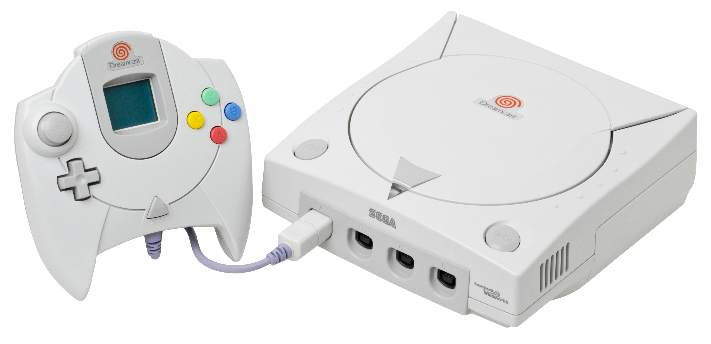
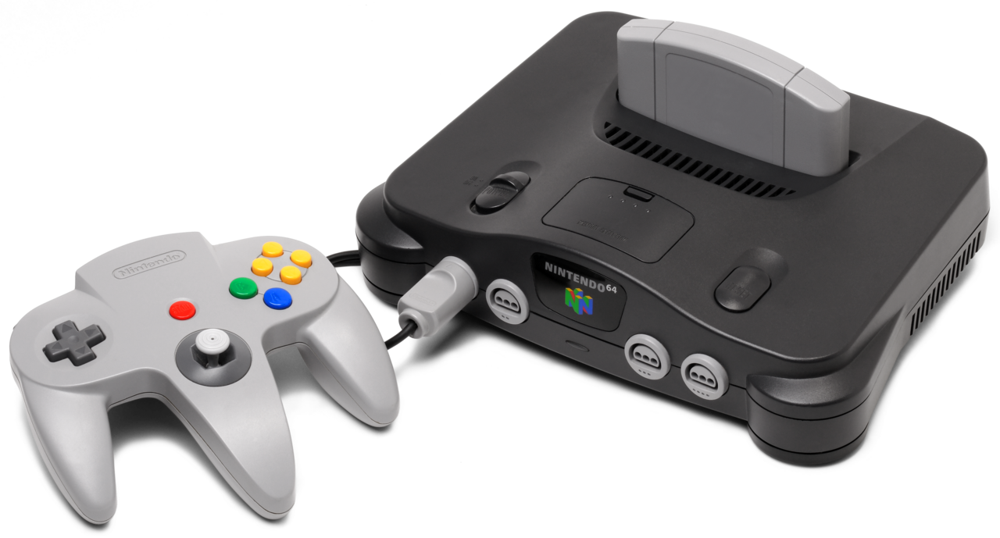
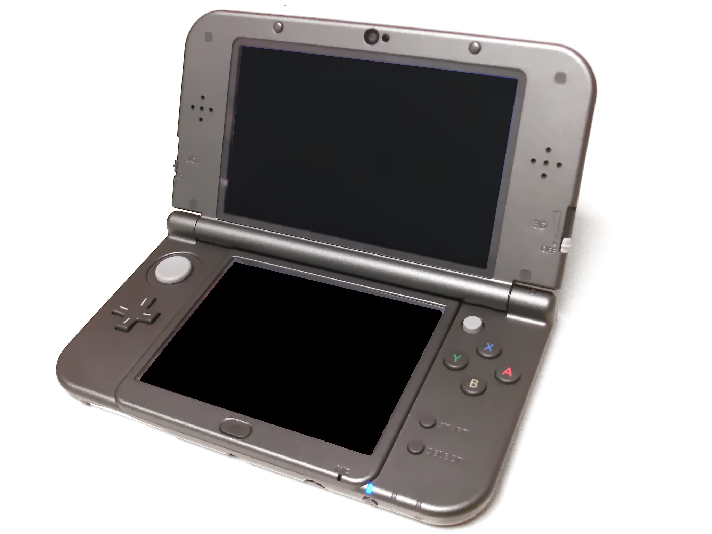
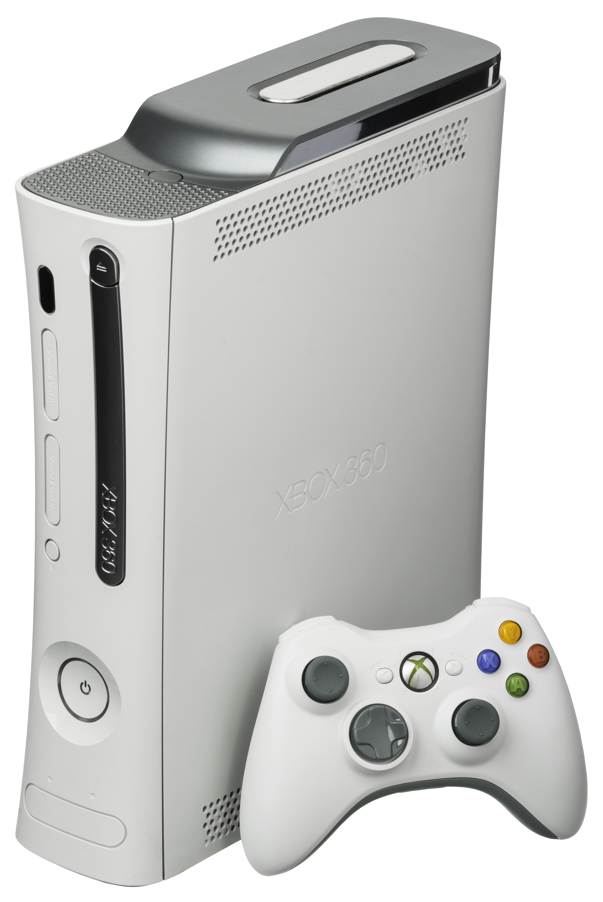
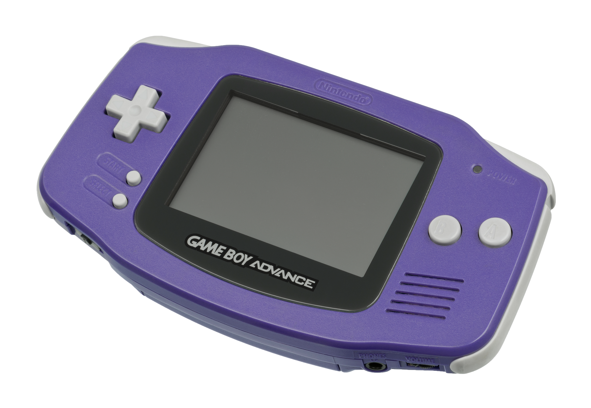
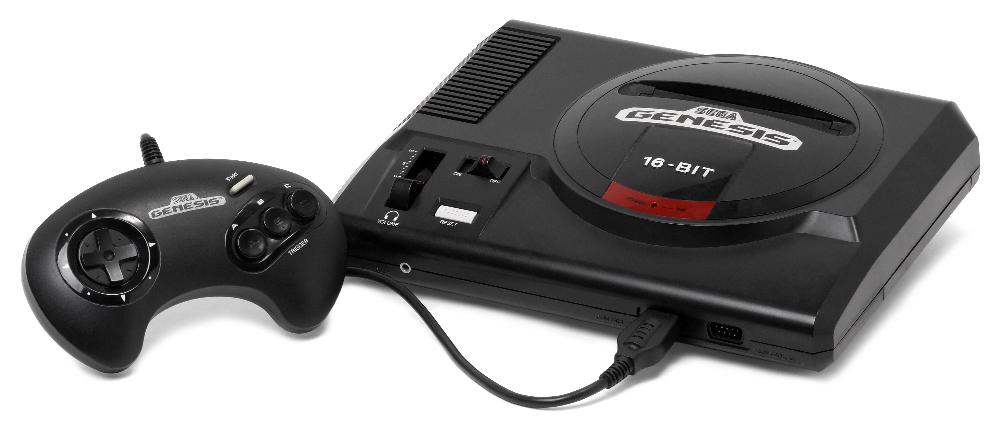
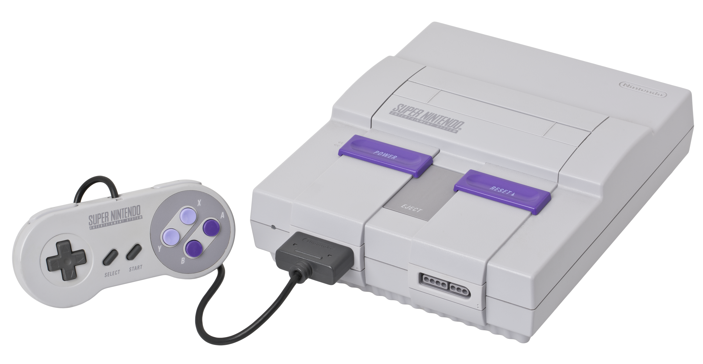
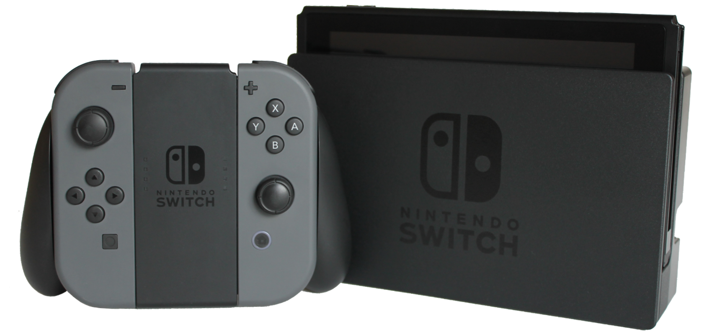
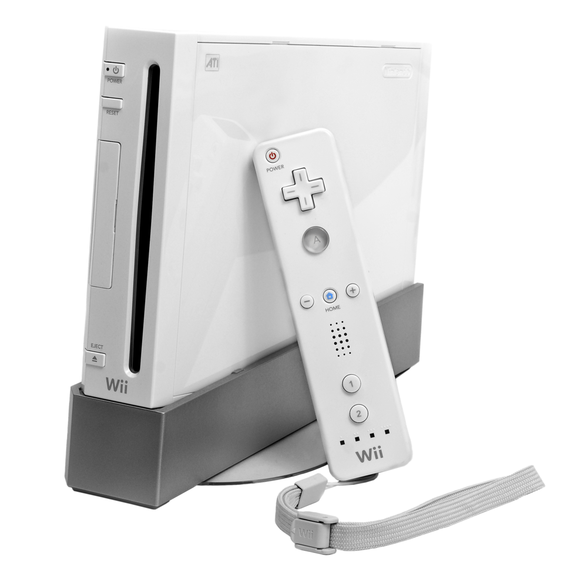
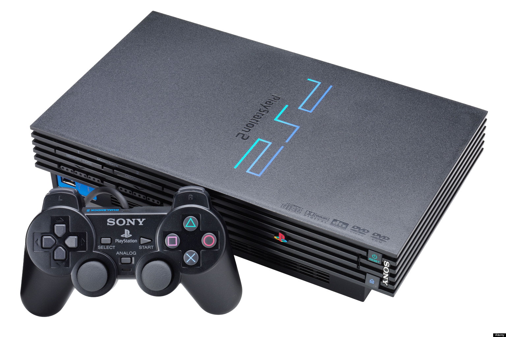

10. Sega Dreamcast

The Dreamcast is a very underrated console for most people. It was very unique at the time of its release. It was one of the first home gaming consoles that could go online to play with other players or download bonus content for games. It included a memory card that doubled as a tiny portable console, similar to very popular at the time, Tomogatchi. On top of that, it also had the ability to play music CD's. Many extremely popular games originated from this console, such as Sonic Adventure, Jet Set Radio, and Phantasy Star Online. Sadly, the console isn't popular among the public as it was a commercial failure due to very unfortunate timing of its release with the more popular console, PlayStation 2, and the failure of Sega's last console, Sega Saturn, making it the last official console that Sega developed before becoming 3rd-party.
9. Nintendo 64

Nintendo's first 3D console. It was able to set the standard for what 3D gaming can be. Many popular titles came from this, such as Super Mario 64, Mario Kart 64, and Super Smash Bros. However, it struggled a lot in its competitor, the PlayStation. Nintendo decided to not use discs for their new console at the time as they believed it was the better method. However, this caused their games to not contain a lot of file space. For comparison, a N64 cartridge could hold 64 megabytes, and a CD disc could hold around 600 megabytes. This caused many of the new games coming out for that console to make sacrifices to fit within the filesize limit.
8. 3DS / DS

The DS's touch screen gimmick of this console showed how useful dual screen touch controls could be. It was also one of the first handheld consoles that could run games in 3d. Online servers were pretty prominent during its lifespan, with the most popular one being FlipNote, which allowed users to share animations online. The latest version of the DS was the 3DS, which had its own library of games as well as being able to play games from the original DS console. However, unlike the DS, the 3DS didn't have an option to play Game Boy Advance games, but it did include an online shop where you could buy retro games to play wherever you go.
7. XBOX 360

The XBOX 360 was a very popular console around the seventh generation of gaming consoles. It was one of the most popular consoles to play online multiplayer. It was able to become so popular because its competitor, PlayStation 3, was way more expensive than the XBOX 360 and was able to release at an earlier date. However, it had a very troublesome release, as its first model had constant hardware issues, making it a ticking time bomb. Thankfully, this issue has been fixed with its newer models.
6. Game Boy

Nintendo has made a lot of portable consoles in the past, with the most popular being the Game Boy. It was one the first portable gaming consoles and influenced many future games, proving that portable gaming on similar scales to home consoles were possible. The Game Boy had many variants in the coming years, bringing the Game Boy Color, and Game Boy Advance, with each having their own seperate games. Game Boy Advance is considered the best out of the 3 consoles as it can play every game from the Game Boy consoles. The only drawback to these consoles is that they don't have any light coming of the screen, making it hard to see time to time. However, there are special variants of the Game Boy consoles that include a built in light feature that circumvent this issue.
5. Sega Genesis

The console that started the rivalry between Sega and Nintendo. Its actually less powerful than Nintendo's newest console at the time, Super Nintendo, but won a majority of the public due to its marketing, often claiming it being much faster than the Super Nintendo. And the main mascot that helped push that idea was Sonic the Hedgehog, which made the console even more popular. The games often featured here were more mature and voilent than the family friendly Super Nintendo, helping to push more adults into gaming. It gained many accesories during its lifespan, including the Sega CD and Sega 32x. They were both addons to the console and were supposed to improve the game's quality. However, those addons didn't sell as well as the main console itself.
4. Super Nintendo

The games sold on the Super Nintendo were considered more high quality than on the Sega Genesis. Some of the best games given on here were Super Mario World, Super Metroid, Donkey Kong Country, and Star Fox. Gaming graphics and sound vastly improved on this system. The only problem is that some of the games sold on here had to be more family friendly, often removing things such as blood or any other inapropriate things.
3. Nintendo Switch

The Nintendo Switch could be considered the ultimate gaming experience for any player. It doubles as a home AND portable console. Many noteworthy titles in include Super Smash Bros. Ultimate, Super Mario Odyssey, Splatoon 3, and many ports of games from the failed Wii U console, giving players another chance to play amazing titles that were once exclusive to the Wii U. A lot of online services were created so that you could stream old Nintendo game on one system, including the NES, SNES, Game Boy, Sega Genesis, Nintendo 64, and more. A new version of the Nintendo Switch has been released, called the Nintendo Switch 2, which seems to be the same as the original Switch, allowing you to play everything PLUS more games created on the much more powerful switch 2.
2. Nintendo Wii

One of Nintendo's best selling consoles. It was able to integrate motion controls smoothly to the players. It also helped bring in a general audience to gaming with its simple controls. It also had the ability to play GameCube games, which was Nintendo's last failed console before the Wii. It included online multiplayer and introduced being able to play older games from other older consoles using the digital Wii Shop Channel, making it considered to be a great way to play any game on one console.
1. PlayStation 2

The PlayStation 2 is considered the best selling gaming console of all time. It brought many great games such as Grand Theft Auto, Devil May Cry, and Ratchet & Clank. It also had the ability to play games from the original PlayStation. But one of the main reasons as to why it became extremely popular in the first place was because it also had the ability to play DVD movies. For comparison, DVD players were often very expensive around the 2000's, so buying the PlayStation 2 was considered a much cheaper option as it doubled as a DVD player AND a gaming console.